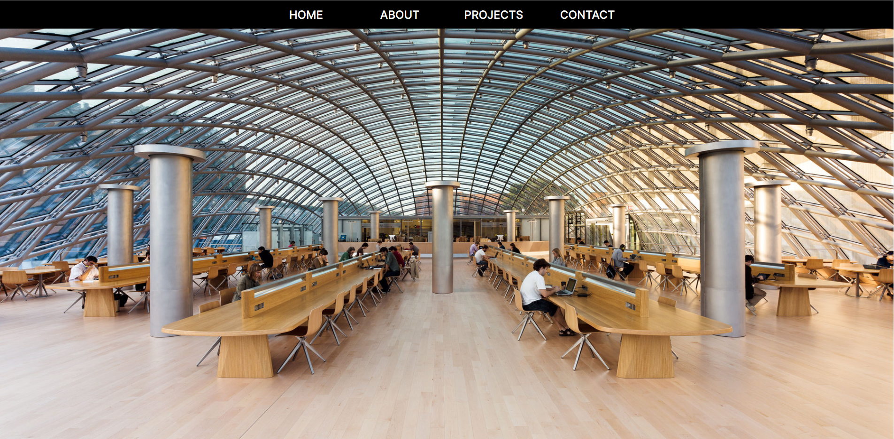

Welcome!
Hello, and welcome to the personal website of Kendrick Golden. Continue scrolling to learn more about my life, work experience, and projects!

Personal Bio
Kendrick Golden is a rising senior at the University of Chicago pursuing a degree in Economics with a specialization in Data Science, while also taking numerous Computer Science courses. Born in San Antonio, Texas he attended the John Jay Science and Engineering High School where he was an active member of the Robotics club and several volunteer groups.
After graduating high school, he began attending the University of Chicago in the autumn 2019. Initially, he planned on solely studying economics, but after a summer internship doing data analysis he began to take interest in data science, and eventually computer science itself.
Currently, he plans on pursuing a a job as a full-stack software developer in a city with an active tech environment. Kendrick always enjoys acquiring new skills and being able to apply these talents in creative ways. When he's not working on a software development project, he can usually be found dabbling in music production, fashion, or any other creative pursuit.

This Website
Creating this website was my first foray into the world of web development, and has been a great learning experience. Working on this site has taught me a lot about web design while also helping me expand my HTML and CSS skills.
Untitled Project 2
Work in Progress.
Untitled Project 3
Work in Progress.